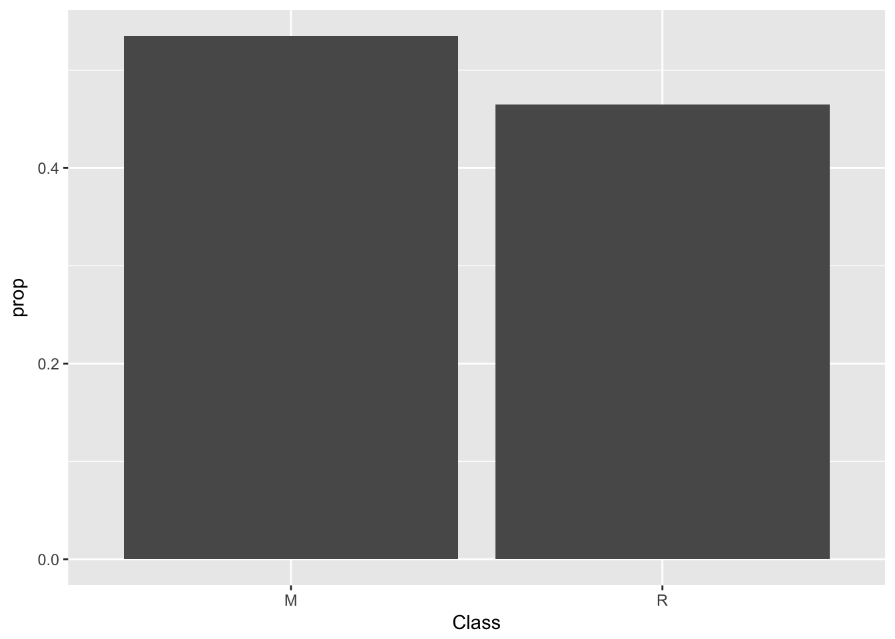
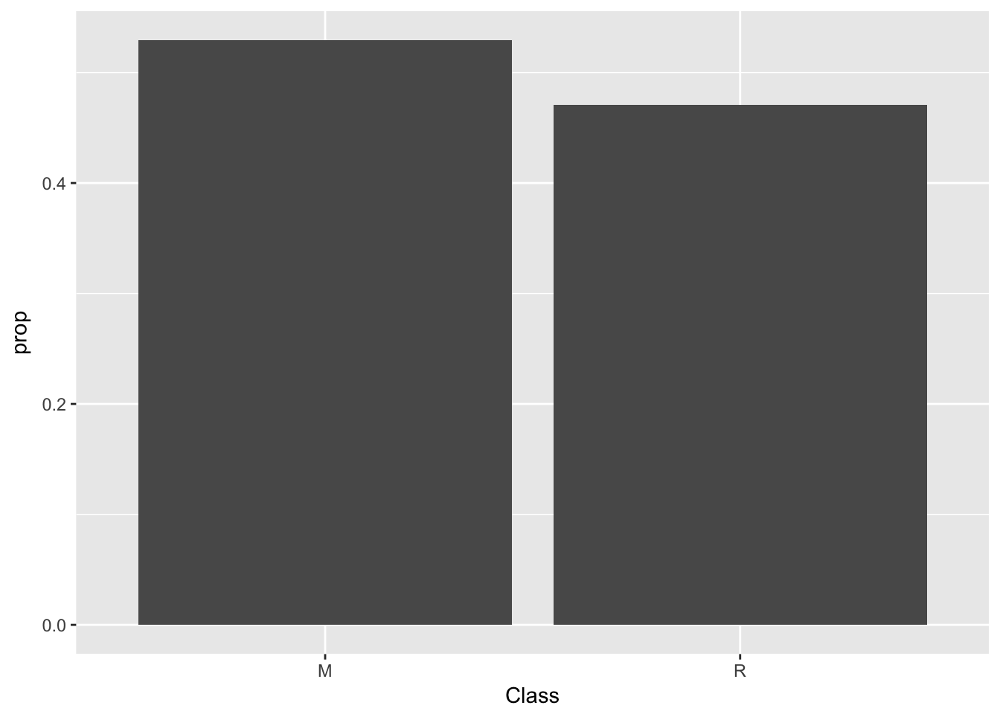
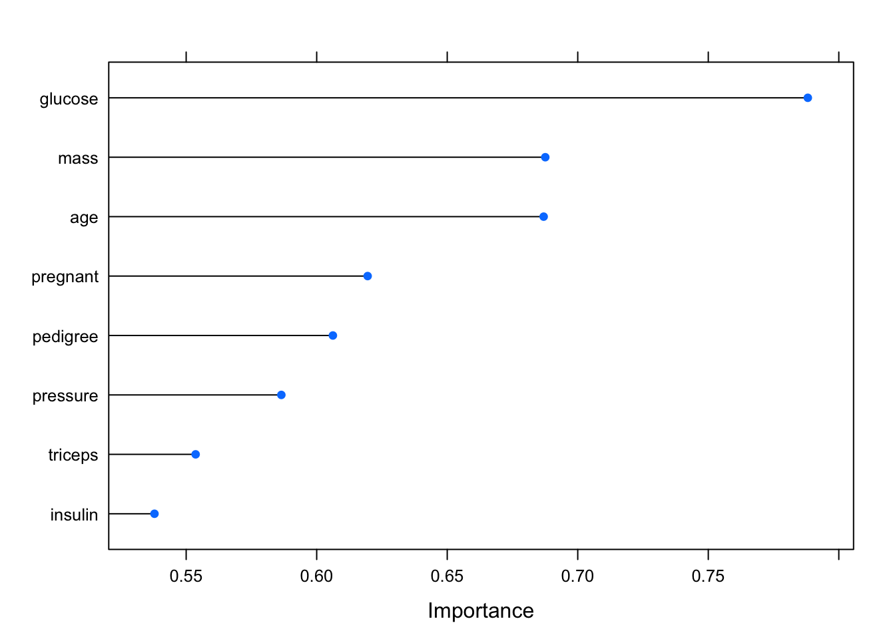

Entre otras cosas con caret podemos hacer particiones para estudiar nuestros modelos con training y test, ademas, las particiones de caret guardan la proporción de clases.
library(caret)
data(Sonar)
set.seed(107)
# se crea la particion: esto obtiene de forma aleatoria unporcentaje de instancias dado por p. El metodo mantiene la proporcion deinstancias para cada valor de la variable clase
inTrain <- caret::createDataPartition(y = Sonar$Class, p = .75,
list = FALSE)
# ahora se obtienen los conjuntos de test y de entrenamiento
training <- Sonar[ inTrain,]
testing <- Sonar[-inTrain,]
# se muestra la proporcion de instancias para cada valor de la variable clase en el conjunto de datos original
summary(Sonar$Class)## M R
## 111 97ggplot(data=Sonar) +
geom_bar(mapping=aes(x=Class, y=..prop.., group=1))# tambien en el de entrenamiento
summary(training$Class)## M R
## 84 73ggplot(data=training) +
geom_bar(mapping=aes(x=Class, y=..prop.., group=1))
# y lo mismo con el de test
summary(testing$Class)## M R
## 27 24ggplot(data=testing) +
geom_bar(mapping=aes(x=Class, y=..prop.., group=1))
También podemos ver de manera muy sencilla las correlaciones.
library(mlbench)
# se hace accesible el conjunto de datos PimaIndiansDiabetes
data(PimaIndiansDiabetes)
# se obtiene la matriz de correlacion de las variables predictoras
correlationMatrix <- cor(PimaIndiansDiabetes[,1:8])
# se encuentran aquellas variables que presentan valores de correlacion
# por encima del valor umbral
highlyCorrelated <- caret::findCorrelation(correlationMatrix,
cutoff=0.3)
print(highlyCorrelated)## [1] 4 5 8El resultado nos dice las variables altamente correladas, alguna de ellas podríamos suprimirla en el proceos de seleccion de variables.
También podemos ver la importancia de las variables.
library(pROC)
# se fija la semilla para asegurar la reproducibilidad de los
# resultados
set.seed(7)
# carga el conjunto de datos
data(PimaIndiansDiabetes)
# prepara el esquema de entrenamiento
control <- caret::trainControl(method="repeatedcv", number=10,
repeats=3)
# aprende el modelo
modelo <- caret::train(diabetes~., data=PimaIndiansDiabetes,
method="lvq", preProcess="scale",
trControl=control)
# estima la importancia de las variables a partir del modelo
importance <- caret::varImp(modelo, scale=FALSE)
# muestra los datos del analisis
print(importance)## ROC curve variable importance
##
## Importance
## glucose 0.7881
## mass 0.6876
## age 0.6869
## pregnant 0.6195
## pedigree 0.6062
## pressure 0.5865
## triceps 0.5536
## insulin 0.5379# representa graficamente los resultados
plot(importance,lw=3)
Parece que la glucosa, la edad y el indice de masa corporal son muy importantes para determinar si se tiene o no diabetes.